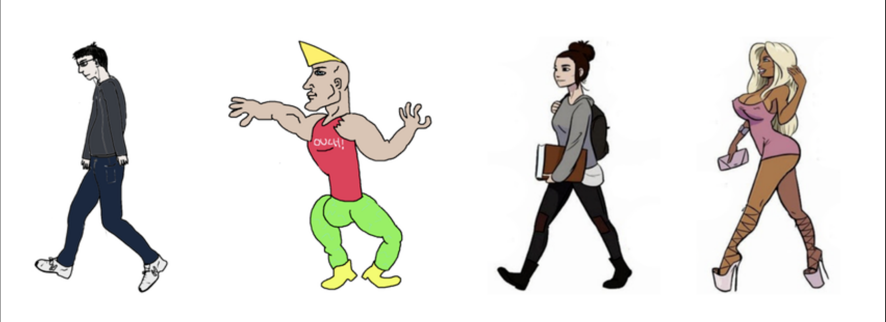
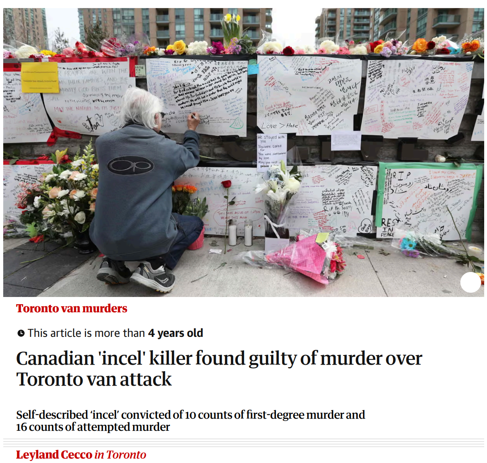

Incel Filter Net
You took the Black Pill
You started out as an isolated gamer, seeking comfort in virtual worlds, but before you knew it, you got trapped. Now you are an incel. An incel, short for involuntary celibate, is someone who cannot form romantic or sexual relationships despite wanting them. Within this world, rigid hierarchies define your place: Chads are confident, attractive men who easily attract women, while Stacys and Beckys are the desirable women who reject you. As a result, you are left on the outside, consumed by rejection, resentment, and a sense of hopelessness, your online world feeding the isolation and anger that keep you trapped.


Real Life Consequences
The incel community is not just an online phenomenon. It has had deadly consequences. Members often feed off each other’s anger and sense of entitlement, which can spiral into violent actions. Elliot Rodger’s 2014 attack in Isla Vista, California, in which he killed six people and injured fourteen, was directly motivated by his identification with the incel ideology and his frustration over being rejected by women. Similarly, the 2018 Toronto van attack, which claimed ten lives and left sixteen injured, was carried out by an individual influenced by incel rhetoric online. These tragedies show how the beliefs and rhetoric promoted online can directly inspire deadly real-world actions.

